Introducción
Este material formativo denominado Lógica Proposicional introduce al aprendiz, en las nociones elementales de los algoritmos, estructuras de programación y herramientas que permiten el diálogo del usuario con la máquina, que le permitirán entender el funcionamiento interno de un programa, así como diseñarlos, progresando de manera fácil y constante.
1. Diseño y construcción de algoritmos
1.1 Conceptos
Un algoritmo es una serie de instrucciones, que ejecutadas correctamente obtienen el resultado esperado, la palabra se origina del nombre del matemático Al Khawarizmi.
Para ampliar la información lo invitamos a leer sobre concepto e historia del algoritmo:
1.2 Pasos para el diseño de un algoritmo
Para resolver un problema es necesario seguir un orden:
Analizar el problema.
Diseñar el algoritmo.
Expresar el algoritmo.
Ejecución y validación.
En el siguiente material se explican de forma detallada los pasos para el diseño de un algoritmo:
1.3 Representación de los algoritmos
Los algoritmos se representan de dos formas: mediante símbolos en diagramas de flujo y en forma textual denominado pseudocódigo.
Leer acerca de las representaciones de los algoritmos en:
1.4 Estructuras de programación
Un algoritmo preciso, definido y finito, se podrá escribir directamente en un lenguaje de programación como Java, C#, PHP, Python, Ruby.
Para comprender sobre las estructuras de programación estudie el siguiente material:
Estimado estudiante, lo invitamos a leer el siguiente PDF:
Profundice en la programación estructurada, Capítulo 4, Págs. 55-61: Joyanes Aguilar, L. (2003).
Fundamentos de programación: libro de problemas. Algoritmos, estructuras de datos y objetos (2a. ed.). McGraw-Hill España.
2. Fundamentos de programación estructurada en LPP
2.1 Primer programa
Para iniciar con la construcción del primer programa en la herramienta LPP es necesario seguir los siguientes procesos:

Codificación.
La Codificación consiste en pasar el algoritmo al lenguaje de programación seleccionado, en este caso el lenguaje es LPP. El primer programa consiste en leer el nombre de una persona y presentar un mensaje personalizado.
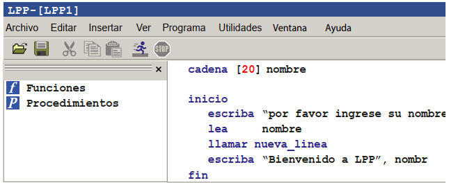|
Linea |
Significado |
|
Cadena [20] nombre |
Antes del inicio se deben declarar todas las variables que se van a emplear en el programa. |
|
Inicio |
Marcar el inicio del programa. |
|
Escriba "Por favor ingrese su nombre" |
Presenta un mensaje en la pantalla. |
|
Lea nombre |
Captura información por parte del usuario. |
|
llamar nueva_línea |
Permite pasar a la siguiente línea de la pantalla del usuario. |
|
Escriba "Bienvenido a LPP", nombre |
Presenta mensaje combinando parte textual con parte variable. |
|
Fin |
Marca el final del programa. |
Compilación
El proceso de compilación permite traducir el código fuente de un lenguaje de programación a lenguaje de máquina (código objeto) para que pueda ser ejecutado por la computadora.
Las computadoras sólo entienden el lenguaje de máquina.
Dentro de la ejecución del proceso de compilación, se permite detectar los errores sintácticos (sintaxis: conjunto de normas que regulan la codificación de un programa), también conocidos como errores de compilación.
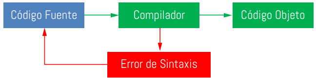Para compilar un programa en LPP, seleccionamos del menú Programa la opción Compilar.
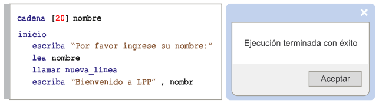Depuración
La depuración permite hacer el seguimiento paso a paso de un programa.
Con la depuración es posible pasar de instrucción en instrucción e ir observando el comportamiento que va teniendo el programa y los valores que van tomando las variables. De esta manera el programador puede encontrar tanto errores de sintaxis como errores de lógica.
Igualmente, se pueden establecer puntos de interrupción de manera que el programa se ejecuta hasta esa línea de instrucciones y el programador puede ver el contenido de las variables, así como el comportamiento del programa hasta ese punto.
Para depurar un programa en LPP, se cuenta con una serie de opciones desde el menú Programa.
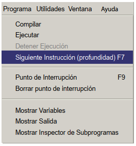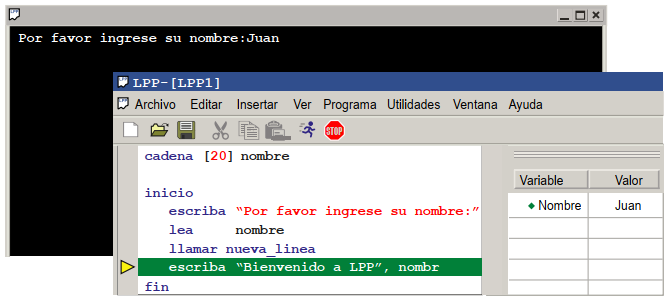Ejecución
La ejecución del programa permite observar su comportamiento de la manera como lo percibirá el usuario final. Para ejecutar un programa en LPP, se selecciona del menú Programa la opción Ejecutar, o se hace clic en el botón correr de la barra de herramientas.
2.2 Tipos de datos
Un algoritmo opera con los datos que son expresiones que describen los objetos. Los diferentes tipos de datos determinan su forma de almacenamiento en la memoria y las operaciones que podrá desarrollar.
Leer sobre los tipos de datos para desarrollar un programa de computador en:
|
Tipo de dato |
Nombre en LPP |
Comentarios |
|
Entero |
Entero |
Números sin decimales. |
|
Real |
Real |
Números que pueden tener decimales. |
|
Lógico |
Booleano |
Solo recibe valores de falso y verdadero. |
|
Carácter |
Carácter |
Sólo recibe un único carácter, que puede ser una letra, un número o un signo. |
|
Cadena |
Puede recibir un conjunto de carácteres. |
Programa de ejemplo

|
Sección |
Comentario |
|
A |
Declaración de cada una de las variables empleadas en el programa con su respectivo tipo de dato. |
|
B |
Lectura o asignación de datos a cada una de las variables empleadas en el programa. |
|
C |
Escritura o impresión de los datos contenidos en cada una de las variables empleadas en el programa. |
2.3 Operadores y expresiones aritméticas
Los operadores se utilizan en las expresiones e indican las operaciones a efectuar con los operandos.
Los operadores aritméticos
La mayoría de los programas de computador requieren realizar cálculos u operaciones que involucran operadores aritméticos, por esta razón, como programadores es necesario conocer cada uno de ellos y la manera como el computador los interpreta para calcular los resultados de una determinada expresión o fórmula.
¿Cuál es el resultado de la siguiente expresión?
3 + 5 x 2 = _____?
la respuesta correcta es 13, pues bien, además de conocer los diferentes operadores aritméticos, también es importantísimo conocer los niveles de prioridad de cada uno de ellos.
Explicación
5 x 2 = 10
3 + 10 = 13
En el caso de la expresión 3 + 5 x 2, primero se realiza la multiplicación 5 x 2 cuyo resultado es 10 y posteriormente se realiza la operación 3 + 10, dando como resultado final 13.
Reglas de prioridad en los operadores aritméticos
Cuando dos operadores tienen el mismo nivel de prioridad, dentro de una expresión se evalúan de izquierda a derecha.
En LPP el signo igual (=), se representa mediante una flecha dirigida hacia la variable que recibe el valor, esta flecha está conformada por los carácteres menor que (<) y menos (-) así: <-
|
Prioridad |
Operador |
Significado |
Ejemplo |
|
|
1 |
^ |
Exponenciación |
4 ^ 2 = 16 |
3 ^ 3 = 27 |
|
2 |
* |
Multiplicación |
2 * 4 = 8 |
7 * 5 = 35 |
|
/ |
División |
5 / 2 = 2.5 |
6 / 3 = 2 |
|
|
3 |
DIV |
División entera |
5 DIV 2 = 2 |
7 DIV 4 = 1 |
|
MOD |
Residuo de la División |
5 MOD 2 = 1 |
8 MOD 4 = 0 |
|
|
4 |
+ |
Suma |
3 + 4 = 7 |
2 * 9 = 11 |
|
- |
Resta |
9 - 5 = 3 |
7 - 6 = 1 |
|
ejemplo, para representar la siguiente expresión: X = 3 + 5
En LPP sería: X <- 3 + 5
Ejemplos de expresiones aritméticas
Cuando el programador desea determinar un orden específico de ejecución en una expresión aritmética, puede emplear los paréntesis para agrupar, de esta manera, las operaciones que se encuentren dentro del paréntesis serán las primeras en ejecutarse.
Retomando el ejemplo de la expresión:
3 + 5 x 2 = 13
5 x 2 = 10
3 + 10 = 13
pero
( 3 + 5 ) x 2 = 16
( 3 + 5 ) = 8
8 x 2 = 16
Ejemplo, manejando expresiones en un programa
Programa No. 3 Manejando expresiones: a un programador le solicitan realizar una aplicación que calcule la nota promedio de un alumno a partir de las 2 notas que tiene en una asignatura.
Durante el análisis, el programador toma un caso de prueba para descubrir cuál es el procedimiento que debe llevar a cabo. En el caso de prueba toma como la primera nota el valor de 4 y como segunda nota el valor de 3.
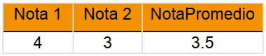Durante el análisis, el programador identifica que debe sumar las dos notas y el resultado lo debe dividir entre dos: 4 + 3 = 7 luego 7 / 2 = 3.5
A partir de este análisis, el programador desarrolla la siguiente aplicación en LPP:
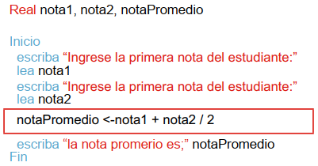Al ejecutar la aplicación ingresando los datos de prueba, el programador obtiene el siguiente resultado:
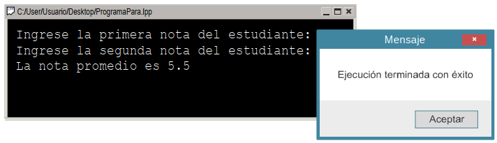Se debe recordar las reglas de prioridad y concluir que la primera operación que se está ejecutando es la división, por lo tanto, el programador realiza un ajuste al programa para definir el orden deseado de ejecución de los operadores aritméticos mediante el uso de paréntesis. 3 / 2 = 1.5 y 4 + 1.5 = 5.5
Después de buscar el error, se da cuenta que este se encuentra en la siguiente línea:
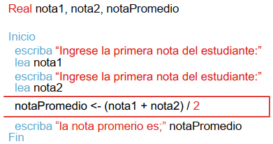Al ejecutar nuevamente la aplicación, obtiene el resultado esperado:
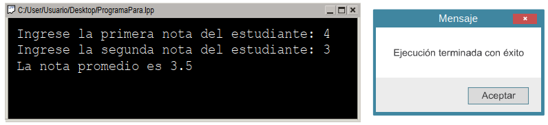2.4 Operadores relacionales y lógicos
El resultado de una operación lógica o relacional es un valor lógico verdadero o falso.
Analice cómo se emplean los operadores relacionales y lógicos para definir condiciones dentro de un programa:
2.5 Estructuras básicas de programación
Las estructuras básicas permiten desarrollar algoritmos fáciles de escribir, leer, modificar y comprobar.
Examine las estructuras secuenciales, condicionales y cíclicas que permiten controlar el flujo lógico en los programas:
2.6 Estructuras cíclicas
Las estructuras cíclicas o de repetición se utilizan para repetir un conjunto de sentencias.
Lea sobre las estructuras de programación cíclicas, las características y ejemplos:
2.7 Organización de las estructuras en un programa
Las estructuras secuenciales y cíclicas pueden ser anidadas e introducidas unas en el interior de otras.
Armando el rompecabezas con estructuras de programación
Cómo vimos, las estructuras de programación son de tipo secuenciales, condicionales y cíclicas y con estos 3 tipos de estructuras se pueden desarrollar una gran cantidad de aplicaciones de software, la clave está en la organización lógica que se le den a las instrucciones y estructuras para resolver un problema mediante un programa de computador.
La organización de las estructuras en un programa depende exclusivamente del problema que se desea resolver, por lo tanto, es posible tener un programa con una estructura condicional al interior de una estructura cíclica o un ciclo al interior de otro (ciclos anidados), o una estructura cíclica al interior de una condicional y estructuras secuenciales al interior o por fuera de estructuras cíclicas o condicionales. Por esta razón, el desarrollo de un programa es similar a la construcción de un rompecabezas donde cada elemento debe estar en el lugar adecuado para interactuar con los demás elementos y así construir una solución integral a un problema determinado.
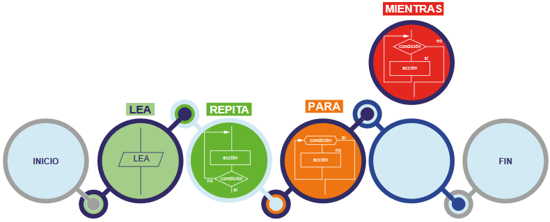Para comprender los ciclos anidados repase los siguientes ejemplos, Págs. 34-36 Castillo Suazo, R. (2001). Programación en LPP. PSeInt
2.8 Ejemplo
Identifique la forma de codificar y ejecutar un programa con diferentes estructuras de programación en el siguiente ejemplo:
Se desea desarrollar una aplicación que lea una cantidad determinada de números y para cada uno indique si se trata de un número primo o no. (Un número primo es aquel que solo es divisible por 1 o por sí mismo).
En el siguiente ejemplo se combinan diferentes estructuras de programación:
Ciclo PARA que recorre desde 1 hasta la cantidad de números leída.
Ciclo Repita que se ejecuta hasta que exista más de 2 divisores o el índice sea mayor que el número.
Estructura condicional SI que evalúa la cantidad de divisores.
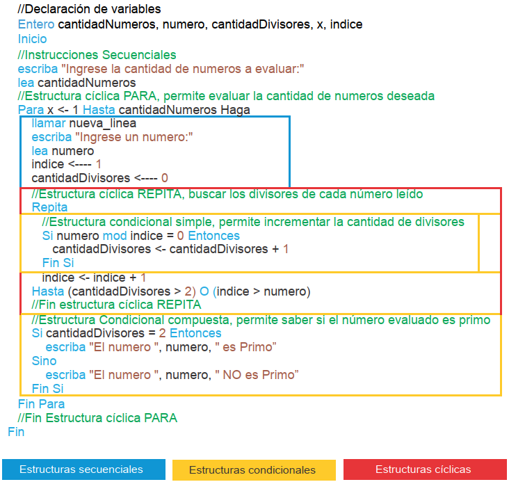El resultado del programa con diferentes estructuras de programación es el siguiente:
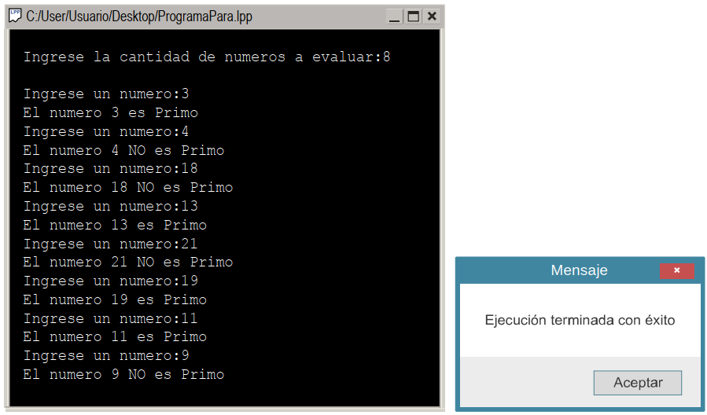De esta manera, podemos observar como las diferentes estructuras de programación se pueden combinar para lograr dar solución a un determinado problema.
3. Herramientas para creación y prueba de algoritmos
3.1 DFD
DFD es un editor de diagramas de flujo con el cual puede dar forma gráfica a un algoritmo, ejecutarlo y depurarlo.
Lo invitamos a construir los algoritmos que se proponen en el siguiente laboratorio:
3.2 LPP o PSeint
La herramienta LPP emplea pseudocódigo, cuya función principal es que el programador se centre en los aspectos lógicos de la programación, dejando la parte técnica para cuando se vea la sintaxis de un lenguaje de programación verdadero.
Para diseñar, construir e implementar algoritmos expresados en pseudocódigo y aplicar las estructuras de programación, desarrolle los algoritmos del siguiente material:
3.3 Python
Python es un software libre, lenguaje orientado a objetos, comprensible y de fácil uso.
Consulte la biblioteca digital
Leer sobre el proceso de instalación de Python. Capítulo 3, Págs. 25-37. Hinojosa Gutiérrez, Á. (2015). Python paso a paso. RA-MA Editorial.
Analice el paso a paso para comenzar a programar. Capítulo 4, Págs. 39-46. Hinojosa Gutiérrez, Á. (2015). Python paso a paso. RA-MA Editorial.
Realice los ejercicios propuestos. Capítulo 4, Pág. 47 Hinojosa Gutiérrez, Á. (2015). Python paso a paso. RA-MA Editorial.
Glosario
Algoritmo:un grupo finito de operaciones organizadas de manera lógica y ordenada que permite solucionar un determinado problema. Se trata de una serie de instrucciones o reglas establecidas que, por medio de una sucesión de pasos, permiten arribar a un resultado o solución.
Ciclos anidados:cuando un ciclo se encuentra dentro de otro ciclo.
DFD:siglas de Diagrama de Flujo de Datos.
LPP:Lenguaje de Programación para Principiantes.
Pseudocódigo:se trata de un falso lenguaje, ya que apela a las normas de estructura de un lenguaje de programación aunque se encuentra desarrollado para que pueda ser leído por un ser humano y no interpretado por una máquina.
Python:es un lenguaje de scripting independiente de plataforma y orientado a objetos, preparado para realizar cualquier tipo de programa, desde aplicaciones Windows a servidores de red o incluso, páginas web.
Material complementario
| Nombre del documento o material | Tipo de material | Enlace del recurso |
|---|---|---|
| Joyanes Aguilar, L. (2003). Fundamentos de programación: libro de problemas. Algoritmos, estructuras de datos y objetos (2a. ed.). McGraw-Hill España. Capítulo 4, Págs. 55-61. | Web | Ver |
| Castillo Suazo, R. (2001). Programación en LPP. PSeInt | Web | Ver |
| Hinojosa Gutiérrez, Á. (2015). Python paso a paso. RA-MA Editorial. Capítulo 3, Págs. 25-37 y Capítulo 4, Págs. 39-47 | Web | Ver |
Referencias bibliográficas
Corona, M. (2011). Diseño de algoritmos y su codificación en lenguaje C. McGraw-Hill Interamericana. Tomado de:http://www.ebooks7-24.com.bdigital.sena.edu.co/?il=345
Definición.DE (2020).Definición de Algoritmo.https://definicion.de/algoritmo/
Definición.DE (2020).Definición de seudocódigo.https://definicion.de/pseudocodigo/
Desarrolloweb.com. (2003). Qué es Python.https://desarrolloweb.com/articulos/1325.php
Hinojosa Gutiérrez, Á. (2015). Python paso a paso. RA-MA Editorial.https://elibro-net.bdigital.sena.edu.co/es/lc/senavirtual/titulos/107213
Rohaut, S. E. F.-, & Ebel, F. (2019). Algoritmia técnica fundamentales de programación ejemplos.https://www-eni-training-com.bdigital.sena.edu.co/portal/client/mediabook/home